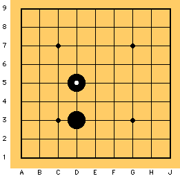
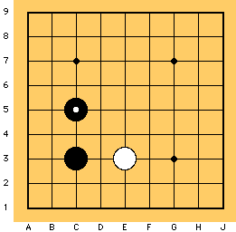
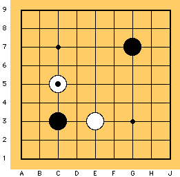

Aqui, você aprenderá como jogar quando as pedras brancas e as pretas não estão diretamente atacando umas as outras
Essa é a hora de você fazer movimentos que fortaleçam sua posição, preparando-se para uma futura guerra ou ainda fazendo algum território.
Esse movimento ( D5) é chamado Um Ponto Acima (ou Ikken tobi).
O movimento de pulo para D5 está quase conectado ao D3. Portanto, tal movimento pode ser usado de muitas maneiras como ataque, defesa ou fuga.
Outro provérbio do Go: Nenhum movimento de Um Ponto Acima é um mau movimento.
Faça o Um Ponto Acima se você não tem a menor idéia de onde jogar.
Se a branca jogar bem perto de sua posição, o Um Ponto Acima é bem recomendado.
Esse movimento defende sua pedra C3 enquanto você aumenta o seu território à esquerda.
Se você ignorar o movimento de aproximação da branca E3 e jogar em lugares irrelevantes como G7, sua pedra C3 pode ser atacada de ambos os lados.
 Próximo
Próximo
 Conteúdo
Conteúdo